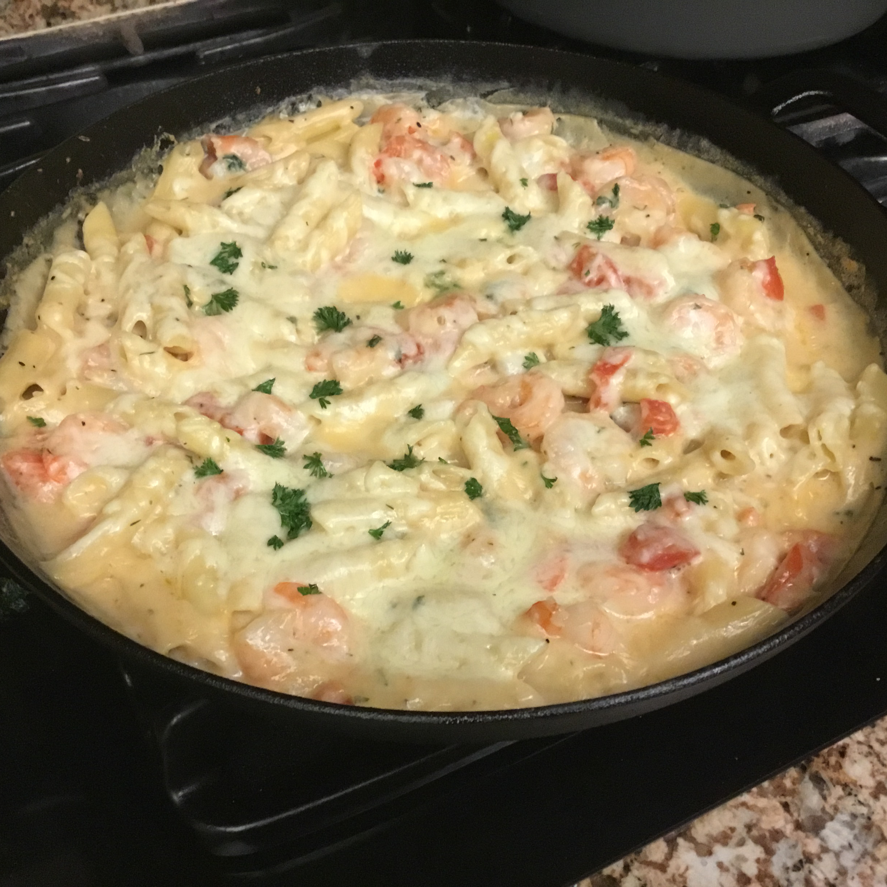

Garlic Shrimp Pasta Bake

Description
When I was 10 years old, I dreamed of a dish like this existing. For the past 53 years i have searched.
I have scoured the globe, looking for the perfect ingredients. I have succeeded my brothers. Victory is mine this day.
Ingredients
- 1 teaspoon vegetable oil
- 1 (10 ounce) package penne pasta
- 3 tablespoons butter, divided
- 1 tablespoon minced garlic
- 1 pound uncooked medium shrimp, peeled and deveined
- 3 tablespoons chopped fresh parsley, divided
- 2 teaspoons chopped fresh dill
- 2 tablespoons all-purpose flour
- 1/2 cup chicken broth
- 1 cup milk
- 2 large tomatoes, chopped
- 1 tablespoon lemon juice
- 1 teaspoon salt
- 1 teaspoon ground black pepper
- 3/4 cup grated Parmesan cheese
- 3/4 cup grated Parmesan cheese
- 1/4 cup shredded mozzarella cheese